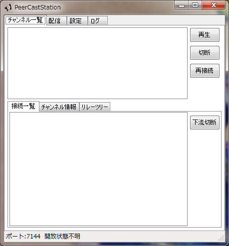
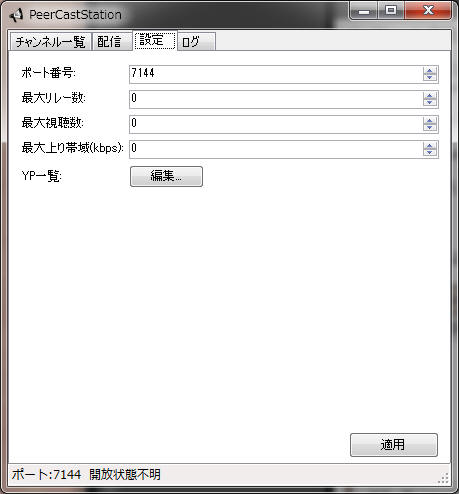
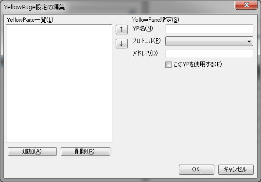
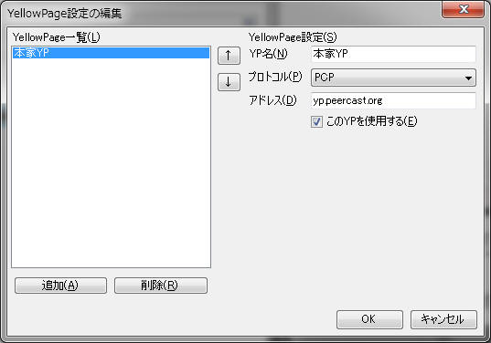
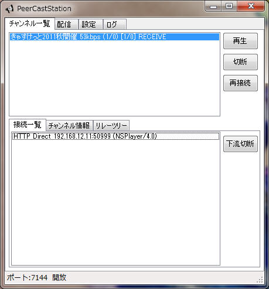
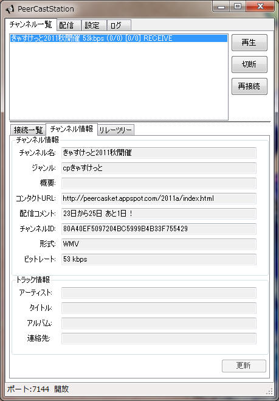
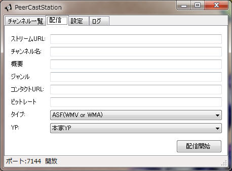
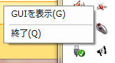

PeerCastStationはリメイク版PeerCastです。PeerCast.exeのかわりとして使えます。
Windows XP SP3以降 + .NET Framework 3.5
Windows以外ではmono 2.6.7以降。今のところGUI必須
インストーラなどは無いので適当な場所にzipを展開してPeerCastStation.GUI.exeを起動してください。起動時にエラーが起きた場合は.NET Framework 3.5以降が入ってない可能性が高いです。先にダウンロードしてインストールしてください。
Windows以外の場合はmonoをインストールしてください。Linuxなんかだとパッケージマネージャから入れれば大丈夫なはず。Macなどではmono-projectからダウンロードしてインストールします(2.6.7以降ならどれでも)。Macの場合はX11も必要なので入れておいてください。あとはPeerCastStationのzipを適当な場所に展開して、ターミナルから
mono PeerCastStation.GUI.exeで実行してください。
起動すると次のような画面になります。

まずは設定タブをクリックしましょう。

ポート番号や上り帯域を設定して適用ボタンを押します。設定したポートが既に使われている場合は下のステータスバーに「ポートが開けません」といったメッセージが出ます。その場合はポートを変更するか、同じポートを使っているアプリを終了して再度適用ボタンを押してください。
「開放状態不明」になっている場合はまだどこにも接続していないのでポートが開いているかどうかわからない状態です。どこかの配信を見るか配信を始めるとポートが開いているかのチェックが行なわれるので、それまでは気にしなくてかまいません。
今のところ設定できるのは全体での最大リレー数や最大視聴数だけです。チャンネル毎の設定はまだできません。
配信する際にはYP一覧でYPを登録しておきます。配信しない場合でもYP登録を行なっておくといいことがあるかもしれません。

まず追加ボタンを押します。

新しいYP設定が追加されるので編集します。YP名は表示用なのでお好きなように。プロトコルは今のところPCP一択です。アドレスにはYPのアドレスおよびポート番号を指定します。ポート番号は省略したら7144です(PCPの場合)。
設定したYPを一時的に使わないようにしたい場合は「このYPを使用する」のチェックを外します。「↑」「↓」ボタンでリストの並びを変更できます。
OKボタンを押すと設定が保存されます。
見る方法は普通のPeerCastと同じです。YPのページからPlayリンクで再生するか、各種YPブラウザで見てください。

チャンネル一覧にチャンネルが出ます。再生は一旦ブラウザ経由でプレイリストを開きます。切断はチャンネルの接続を切ります。再接続をするとリレーをつなぎなおします。
チャンネル一覧にはチャンネル名、ビットレート、全体(自分以下の)の視聴数/リレー数、自分の視聴数/リレー数、チャンネル状態、が表示されます。全体の視聴・リレー数は怪しい場合があります。
ポート開放が上手くいっていれば下のポートが開放になるはずです。なっていない場合はファイアウォールでブロックされているかルータの設定などが上手くいってないようなので、設定を確認してください。
接続一覧には自分に直接つながってる接続が表示されます。プレイヤーがつながっている場合はHTTP Direct、リレー接続の場合はPCP Relayが表示されます。
PCP Relayの場合には最後に「0」「-」「B」が表示されることがあります。「0」はポートが開放できてない(いわゆるポト0)、「-」はこれ以上リレーできない(いわゆる紫または青)、「B」はリレー受信できていないことを表します。
強制的に下流を切断したい場合は、切りたい接続を選んで下流切断を押してください。
チャンネル情報のタブでチャンネル情報の確認と、自分が配信している場合はチャンネル情報の編集が行えます。

視聴している場合は見るだけですが、配信している場合は編集できるようになっています。編集したら更新ボタンを押してください。

配信タブから配信することができます。
ストリームURLにはWMEなんかのアドレスとポートをURL形式で指定します。間違うと落ちます。
チャンネル名にはチャンネル名を指定します。
タイプには配信するフォーマットを指定します。WMVの場合はASFでかまいません。今のところASFかRAWしかないです。
YPにはチャンネル情報を載せるYPを指定してください。一覧は設定タブで編集できます。全くYPを設定していない場合はどのYPにも載りません。
配信開始ボタンを押すと配信が開始されチャンネル一覧に出ます。RECEIVEにならなかったらストリームURLが間違ってたりします。一旦切ってもう一度試してください。ストリームURLがURL的に間違ってると落ちます。気をつけましょう。あきらかにバグなのでそのうち直します。
Windowsではウィンドウを閉じても終了しません。タスクトレイに入っています。

ダブルクリックするか、右クリックで「GUIを表示」を選ぶとウィンドウがまた表示されます。終了を選ぶと本当に終了します。
Windows以外ではタスクトレイアイコンが上手く動かなかったのでウィンドウを閉じると終了するようになっています。
ログには細かいログが出ます。普通は気にしないので詳しくは書きません。
ログタブにはバージョン情報があります。関連DLLのバージョンが知りたい時にはそこを見てください。
A: 似てるけど違います。PeerCastのソースを参考にC#で一から書き直したPeerCastです。しかし、結局やれることは同じなので改造版みたいなものだと思ってかまいません。機能低下してるけどな。
A: monoのせいなので仕方ありません。GUIについては今後別な方法で実装する予定です。
HTTP出力でメモリリークしていたのを修正した。YP接続部分のログを出力するようにした。
初期バージョン
githubにてソース公開しています。ライセンスはGPLv3です。